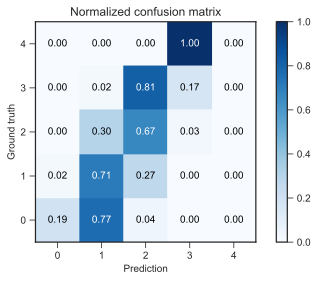
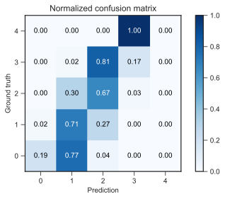

This project is the first assignment of CS-7641 Machine Learning at the Georgia Institute of Technology. The assignment is to use a library to apply five machine learning algorithms to two datasets, study the effects of two hyper-parameters for each algorithm and compare the results.
Datasets
Wine review
The first dataset I chose is Wine Reviews scraped from WineEnthusiast in June 2017 by zackthoutt and available on Kaggle. It consists of over 280k wines with their review by the website. The categories are :
- Country
- Province
- Region_1 and Region_2
- Winery
- Variety
- Designation (name)
- Description (written by the website)
- Price
- Points (score given by the website)
There are also some categories only available on half of the dataset that I dropped immediately. Some of the wines did not have a price or a point score so I dropped them, shrinking the dataset to 258145 entries.
The price is a floating-point value in USD and the points are integers in the range from 80 to 100.
The value I want to try to predict is the score of the wine, which gives an idea of the actual quality. However, to classify, 21 values is too many. I therefore grouped the wines in 5 grades from 0 to 4, analogous to a star system. This number can be tweaked and will affect the accuracy of the classifiers.
As the original point score forms a bell-shaped distribution around a score of 87, the resulting grouping is also a bell-shaped distribution around 1 and 2. Therefore, the dataset is unbalanced, that is the outputs are not distributed evenly.
Distribution of score after grouping
From this distribution, we could create a naïve distribution classifier, that is a classifier guessing by randomly generating the output with the same distribution as the dataset. We can calculate the accuracy of such learner.
Let 𝑝𝑖 be the proportion of class 𝑖 within the dataset. It is also the probability of getting an entry of class 𝑖 by randomly picking in the dataset, and the probability of guessing right the class of a random entry in the dataset.
Thus, when picking a random entry, the probability of picking one of class 𝑖 and correctly guessing its class is $$\pi^2$$.
The total accuracy is therefore $$\Sigma_i p_i^2$$.
For this dataset, we get a distribution classifier with an accuracy of 33.5%.
Another naïve classifier we can create is a single-minded classifier, always guessing the class with the highest representation in the dataset, that is class 1 in this dataset. The accuracy of this one is just the proportion of entries of this class, that is 43.9%.
The single-minded classifier will always do better than the distribution classifier, except for uniform distribution where they will match. Therefore, we will compare the accuracy of the machine learning algorithm classifiers to the single-minded classifier.
As most of the categories are strings, I add to process them to work with the classifier algorithms. I processed the description and the designation by simply reducing them to their length. I ended up dropping the designation length as it was useless and I wanted to focus on the other categories.
The class categories such as country and variety add to be encoded in a way that was understood by the algorithms and reflected the fact that all categories are different and equally different. The best option was to one-hot-encode those categories, that is to split them into as many dimensions as there are values and each entry only features one 1 for each category.
I then scaled the price and the description length to the range from 0 to 1.
Wine quality
The second dataset is also about wine, but Wine Quality. It is made available by Paulo Cortez from the University of Minho in Portugal on the UCI Machine Learning Repository. This dataset is used in the paper P. Cortez, A. Cerdeira, F. Almeida, T. Matos and J. Reis - Modeling wine preferences by data mining from physicochemical properties. In Decision Support Systems, Elsevier, 47(4):547-553, 2009. While the dataset contains data for red and white wines, I restricted my analysis to the white wines because the target classes are less unbalanced.
It contains 4898 wines with 11 physiochemical proprieties and a sensory quality score which I will try to predict with a classifier. The physiochemical proprieties are :
- Fixed acidity
- Volatile acidity
- Citric acidity
- Residual sugar
- Chlorides
- Free sulfur dioxide
- Total sulfur dioxide
- Density
- pH
- Sulphates
- Alcohol
All values are floating-point or integer values which I all scaled to the range from 0 to 1.
The quality score is on a scale from 0 to 10 but in practice, all the scores are between 3 and 9 but both the scores 3 and 9 each have less than 20 wines. I therefore reclassified 3 in 4 and 9 in 8. I then shifted the rating to start at 0.
Distribution of score after grouping
Similarly to the first dataset, we calculate the accuracy of the naïve distribution classifier at 32.4% and the single-minded classifier at 44.9%.
Choices
Both datasets have similar outputs : a 0 to 4 range with a bell-shaped distribution resulting from a subjective measure of the quality of the wines.
However, the key differences lie in the inputs. The Wine Reviews feature subjective and human measures as real values : the description length and the price ; and objective geographical and biological categorical values : regions, varieties, country, etc. The Wine Quality only features objective real values.
Also, Wine Review is a huge dataset with over 258k valid entries while Wine Quality is much smaller with only 4989 entries. Therefore, it is easier to test the algorithms first with the smaller Wine Quality dataset and then switch to Wine Review.
Pre-analysis
Before even launching the algorithms, I decided to run some pre-analysis on both datasets to see if there are obvious trends.
The second dataset, Wine Quality, show very little correlation between the score and any single chemical measure. We can expect the algorithms to struggle more to find accurate rules to classify the entries.
The first dataset is more intuitive. For instance, French wines have an average score of 88.88 while American wines have an average of 88.16, Italian wines 88.48 and Spanish wines 86.93. obviously
It is known that, while price and quality doesn’t correlate exactly for wine, it still is a good approximation and I don’t recommend buying wines bellow 10$ at the supermarket. Using this dataset, we can plot a scatter of price to points :
horizontal : price ; vertical : points on 80-100 scale
I removed the values above 1000$ as they are few and they hinder the readability of the interesting part of the scatter plot.
As we can see, there are no great top-rated wines at very low cost and above 50$ we stop seeing low-rated wines.
There proprieties come together intuitively as it is often better to buy less famous regions such as Languedoc-Roussillon for 20$ than world famous ones like a Bordeaux for 30$.
Slicing
Each dataset is imported, cleaned, normalized and shuffled before being cut. For the experiments, I use a 85% training set-15% testing set as well as a cross-validation with the full dataset cut in x folds. As the Wine review dataset is larger, I will use 10 folds by default but reduce it later when using smaller samples. For the Wine quality dataset, I use 4 folds.
Methodology
Tools
Everything was done in Python using Visual Studio Code and the Jupyter extension. The dataset library is Pandas. The machine learning library is SciKit Learn. The plotting library is PyPlot. When possible, I visualize the decision trees with GraphViz.
Measures and metrics
I decided to use three different measures of accuracy.
The basic test accuracy is the accuracy on the training set (15% of the sample of the dataset) after training on the training set (85%).
However, the testing set remains the same. When searching optimal hyper-parameters, there is a risk of overfitting on the testing set.
Therefore, I also used cross validation score. This is the accuracy score I used to choose optimal hyper-parameters. The number of folds I used depends on the size of the dataset. The Wine Review dataset has enough entries to use 10-fold cross validation, while the Wine Quality is too small and I lowered to 4-fold.
As both of my datasets are unbalanced, that is the target classes are not filled uniformly but rather in a gaussian-like distribution, the balanced accuracy is useful to measure how unbalanced the guesses are and if minority classes are sacrificed for better accuracy on the majority classes.
For all classifiers and hyper-parameters, I plot the accuracy on the training set in red, the accuracy on the testing set in green and the cross-validation accuracy in blue with the average of all folds as a solid line and the min-max envelope in a lighter blue.
The same colors are used when plotting the learning curves.
After choosing the optimal hyper-parameters, I plot the confusion matrix on the testing set in absolute and normalized. This is useful to diagnose a poor balanced accuracy score as we can see if some classes are misclassified or completely dropped.
Decision tree
Wine review
I first ran the decision tree classifier without any restriction on the number of leaves and the depth and with the measure of split quality set to use entropy of information, on the entire dataset, that in on 258k entries.
| Depth | Leaves | Test accuracy | Crossval accuracy | Balanced accuracy | |
|---|---|---|---|---|---|
| 258k | 89 | 63200 | 78.0% | 80.2% | 75.7% |
The results are significantly better than the naïve classifiers.
As we can see, the classifier works really well on all classes and the errors are mostly only one class away from the truth.
However, when searching an optimal hyperparameter, we have to fit the classifiers many times. With such a huge dataset, the computation time is just too great. Therefore, I will have to sample the dataset.
I decided to rerun the decision tree with no restriction on only 80k entries randomly sampled from the dataset.
| Depth | Leaves | Test accuracy | Crossval accuracy | Balanced accuracy | |
|---|---|---|---|---|---|
| 258k | 89 | 63200 | 78.0% | 80.2% | 75.7% |
| 80k | 68 | 25846 | 62.8% | 63.7% | 59.8% |
As expected, the tree is smaller, as we encounter less different regions and fewer special cases. However, the accuracy is severely affected. While the confusion matrix looks decent, it is worse than the 258k one.
This will be a problem when searching the optimal hyperparameters. To demonstrate the methods and the analysis of the method, I will take small samples of the dataset but keeping in mind that working with the whole dataset would produce significantly better results and different optimal hyperparameters.
I tried pruning the tree with the full 258k dataset and with the reduced 80k dataset.
First with 258k samples :
Here no maximum is reached before the previous result and pruning the leaves would result is a significantly lower accuracy. Overfitting isn’t a problem with this dataset.
We can still prune the depth to 50 without affecting the accuracy much.
| Depth | Leaves | Test accuracy | Crossval accuracy | Balanced accuracy | |
|---|---|---|---|---|---|
| 258k | 89 | 63200 | 78.0% | 80.2% | 75.7% |
| 258k pruned | 50 | 60940 | 77.5% | 79.5% | 75.3% |
As expected, the performances are slightly degraded. The number of leaves barely decreased so this pruning probably only cut some thin and long branches of the tree. The confusion matrix shows that the pruning affected the minority classes the most. As we can see on the learning curves, more sample would improve the accuracy even more.
Then with 80k :
Again, while the accuracy almost plateaus after a certain tree size, it still increases slightly and there is no problem with overfitting. We can still prune this tree to a depth of 10. I then checked if the optimal number of leaves would could be lowered in this case.
And indeed it can. We can thus prune the tree to a depth of 10 and maximum 200 leaves.
| Depth | Leaves | Test accuracy | Crossval accuracy | Balanced accuracy | |
|---|---|---|---|---|---|
| 80k | 68 | 25846 | 62.8% | 63.7% | 59.8% |
| 80k pruned | 10 | 200 | 61.4% | 61.1% | 41.0% |
While the testing and cross-validation accuracy scores were not affected much, the balanced accuracy dropped by almost 20% and all class 4 entries were misclassified as class 3 or 2.
Wine quality
As this set is small with only 4898 entries, I used the full set. The testing set is 15% of the total dataset.
Again, I first ran the decision tree classifier without any restriction on the number of leaves and the depth and with the measure of split quality set to use entropy of information.
| Depth | Leaves | Test accuracy | Crossval accuracy | Balanced accuracy | |
|---|---|---|---|---|---|
| not pruned | 22 | 1027 | 59.0% | 41.9% | 48.4% |
The results are good for the center majority classes, but really poor for the extremes. The class 0 is more often classified as 1 or 2, while the score for class 4 is worse than the naïve classifiers. This is reflected by the poor balanced accuracy.
The accuracy is worse than the naïve classifiers.
I tried pruning the tree to see if this was due to overfitting. Thus, I modified the hyperparameters for the maximum depth and the maximum number of leaves.
As we can see, while the testing accuracy keeps improving, the cross-validation accuracy reaches a peak score for a depth of 4 and 10 leaves only

| Depth | Leaves | Test accuracy | Crossval accuracy | Balanced accuracy | |
|---|---|---|---|---|---|
| not pruned | 22 | 1027 | 59.0% | 41.9% | 48.4% |
| pruned | 4 | 10 | 48.4% | 51.1% | 30.5% |
Comparing to the classifier before pruning, the cross-validation accuracy increased significantly by 10%, however, the test accuracy and more importantly the balance accuracy fell drastically.
The confusion matrix shows what happens. The classifier tends to squeeze the values towards the center, and the classes 0 and 4 are almost dropped. This classifier is closer to the naïve classifiers as it drops the minority classes in favor of the majority classes.
This is also visible on the graph of the decision tree.
The decision tree is difficult to prune for this dataset and that might be because the minority classes are not so different from the majority and the extra leaves are used to fine tune the classification on the special details.
Overall
On the Wine review dataset using a large sample or the whole dataset, pruning resulted in worse results than the largest tree. However, on the smaller Wine quality dataset, pruning reduced overfitting and improved cross-validation accuracy.
In both cases, the balanced accuracy got severely reduced so pruning might not be recommended for unbalanced datasets but further examination of this assumption is required.
Boosting
Wine review
I first tried to run the study on the pruned decision tree obtained with the 80k sample of the dataset in the previous chapter. However, the computation time was again too large and I had to shrink the dataset to a tiny 5k sample. I ran the decision tree on it and pruned it successfully.
| Depth | Leaves | Test accuracy | Crossval accuracy | Balanced accuracy | |
|---|---|---|---|---|---|
| 5k | 48 | 1681 | 51.3% | 51.0% | 37.9% |
| 5k pruned | 5 | 31 | 60.0% | 59.1% | 37.0% |

The two hyper-parameters I chose to study are the learning rate and the number of estimators used, starting with the former while leaving the latter to the default value of 50

Here, the default learning rate of 1 is not the optimal value. I chose a learning rate of 0.01 for this step, meaning each estimator contributes less to the total, and more estimators should be required.
Thus, I fixed the learning rate at that value and varied the number of estimators.
The testing accuracy curve is unexpected but the cross-validation shows an optimal parameter around 30. As the peak seems rather sharp, I decided to fine tune it even further.
Anything from 28 to 35 is a good choice. Thus, I chose the parameters of a learning rate of 0.01 and 35 estimators.
| Depth | Leaves | Test accuracy | Crossval accuracy | Balanced accuracy | |
|---|---|---|---|---|---|
| 5k | 48 | 1681 | 51.3% | 51.0% | 37.9% |
| 5k pruned | 5 | 31 | 60.0% | 59.1% | 37.0% |
| 5k boosted | 58.3% | 60.0% | 34.8% |
 

The boosting didn’t improve the accuracy scores much and was pretty much unnecessary.
I then made the very questionable assumption that these optimal parameters can be used the larger 80k sample of the full dataset.
| Depth | Leaves | Test accuracy | Crossval accuracy | Balanced accuracy | |
|---|---|---|---|---|---|
| 80k | 68 | 25846 | 62.8% | 63.7% | 59.8% |
| 80k pruned | 10 | 200 | 61.4% | 61.1% | 41.0% |
| 80k boosted | 61.7% | 61.7% | 39.9% |
The cross-validation and testing accuracy scores improved slightly while the balanced accuracy stayed almost unaffected. This shows that boosting can improve performance on the larger dataset but a proper optimization of the hyperparameters is required to take full advantage of this algorithm.
Wine quality
As the pruning of the decision tree was unsuccessful, I initially decided to run the study of the hyperparameters for the Boosting algorithm on both the pruned and not-pruned decision trees, however the performance of the unpruned tree did not improve at all. Indeed, the tree is already almost overfitting. Therefore, the analysis of the hyperparameters is only relevant on the pruned tree from the previous part.
Again, I started by tuning the learning rate with the default 50 estimators.
And again, the best learning rate is around 0.01.
I fixed the learning rate at that value and varied the number of estimators, first exponentially and then between 1 and 100.
This plot isn’t as clear but we can still tell that about 40 estimators is slightly better. This is slightly less than the default value of 50 even though we lowered the learning rate by two orders of magnitude, however the variation with this hyperparameter isn’t striking.
I checked that reducing the number of estimators from 50 to 40 didn’t affect the optimal learning rate much and the results are the same. This is a sort of gradient ascent method to finding a local maximum of accuracy in a landscape of hyperparameters.
Therefore, the optimal hyperparameters are a learning rate of 0.01 and 40 estimators.
| Depth | Leaves | Test accuracy | Crossval accuracy | Balanced accuracy | |
|---|---|---|---|---|---|
| not pruned | 22 | 1027 | 59.0% | 41.9% | 48.4% |
| pruned | 4 | 10 | 48.4% | 51.1% | 30.5% |
| boosted | 50.1% | 52.3% | 28.6% |
Compared to the original tree before and after pruning, we can observe that the cross-validation accuracy increased again as this is the metric I used to choose the optimal hyperparameters. The testing accuracy recovered slightly but this metric isn’t really relevant. However, the balanced accuracy fell again. This is clearly visible on the confusion matrix. This time, in addition to classes 0 and 4, class 3 has also be dropped and the classifier is pretty much just guessing class 2 66% of the time.
Overall
Both datasets showed slightly better results for a learning rate of around 0.01 instead of the default 1 and around 30 to 40 estimators, slightly fewer than the default 50.
On both datasets, balanced accuracy fell drastically.
K-Nearest neighbors
As the training score will always be 100% with KNN, it will be hidden in all the plots of this chapter
Wine review
I first tried KNN with low values of K but could still not get the peak so I used a logarithmic scale again. I also chose Euclidean distance and distance weight for this run.
The optimal number of neighbors is around 200 but a large range of values produce similar results.
I then removed the distance weight and switched it to uniform.
Here the peak accuracy is reached around 40 neighbors and proves better than distance weight.
I also tried different distance metrics but the results were very similar and not interesting to include.
The parameter I chose are a value of K of 40 with Euclidean distance and weight set to uniform.
| K | Distance | Weight | Test accuracy | Crossval accuracy | Balanced accuracy | |
|---|---|---|---|---|---|---|
| 5k | 40 | euclidean | uniform | 55.3% | 57.2% | 31.9% |
I then again made the questionable assumption that these optimal parameters can be used the larger 80k sample of the full dataset.
| K | Distance | Weight | Test accuracy | Crossval accuracy | Balanced accuracy | |
|---|---|---|---|---|---|---|
| 80k | 40 | euclidean | uniform | 59.1% | 59.4% | 37.6% |
The results are better than with the smaller sample as the point density is greater.
As I encoded the categories of the dataset as 1s and 0s in a large sparse array, I also experimented with the distance metrics dedicated to Boolean values. They all gave similar results and didn’t show an improvement from the Euclidean distance. Here are the results for the Jaccard distance.
| K | Distance | Weight | Test accuracy | Crossval accuracy | Balanced accuracy | |
|---|---|---|---|---|---|---|
| 5k | 40 | euclidean | uniform | 55.3% | 57.2% | 31.9% |
| 5k | 50 | jaccard | uniform | 47.6% | 46.1% | 24.1% |
Wine quality
Similarly, I ran KNN with different values of K and I also chose Euclidean distance and distance weight.
To reach a peak accuracy, we need a value of K in the neighborhood of 200, or about 20% of the whole dataset. As the neighbors are weighted by distance, the fact that the optimal K is rather high indicates the points are very close and not we separated, as expected during the pre-analysis. The cross-validation accuracy still is only about 53%.
I then tested to remove the distance weighting and keep the Euclidean distance.
While the cross-validation results are almost identical, the testing accuracy starts very high for 𝐾 = 1 and drop significantly.
This result is very surprising. The cross-validation uses 4 folds for this set while the training-testing uses a 85-15% split ; so when testing, the cross-validation searches neighbors in 75% of the dataset while the regular training-testing (green curve) searches in 85% of the dataset. Thus, the latter has a higher density than the former and a tested point would have more close neighbors with training-testing and thus a better score while the cross-validation would pick points further away and possibly less similar. A weighted with distance criteria would mitigate this effect. However We observe the opposite : the cross-validation is unaffected by the weight but the trainingtesting is.
I then tested other distance functions : Manhattan and Chebyshev, both with and without distance weight, but the results are so similar to the two with Euclidean that they are not worth including.
Therefore, an optimal classifier would be a KNN with a K of 200, Euclidean distance and weighted by distance.
| K | Distance | Weight | Test accuracy | Crossval accuracy | Balanced accuracy |
|---|---|---|---|---|---|
| 200 | euclidean | distance | 64.1% | 52.8% | 45.4% |
While the accuracies are decent, the confusion matrix reveals that, again, the extremes are dropped. This still results in a decent balanced accuracy though.
Overall
On both datasets, the different distance metrics didn’t change the results much.
The datasets required different values of K, and as I took 5k samples for the Wine review and the Wine quality is almost 5k samples long, we can assume that the number of neighbors to pick depends heavily on the problem.
Support Vector Machine
Wine review
The SVC algorithm is much more computation-heavy, I reduced the dataset to only 10000 samples at first.
The first hyperparameter I studied is the kernel. I tried all available kernels. I tried to vary the order of the polynomial kernel up to 5 but the computation time was already one hour for the third order.
| Kernel | Test accuracy | Crossval accuracy | Balanced accuracy |
|---|---|---|---|
| RBF | 54.1% | 54.5% | 31.0% |
| sigmoid | 40.0% | 21.4% | 20.9% |
| linear | 59.0% | 58.2% | 34.2% |
| poly 0 | 41.5% | 43.5% | 20.0% |
| poly 1 | 53.9% | 53.4% | 27.9% |
| poly 2 | 51.9% | 52.3% | 27.2% |
| poly 3 | 53.1% | 53.3% | 35.7% |
I won’t include every confusion matrix as it is not very relevant.
We can observe that the linear kernel is the most accurate in testing and cross-validation tests, and second best in balanced accuracy. The best for balanced accuracy is actually the third-order polynomial.
Linear kernel


Poly 3 kernel
Looking at the confusion matrices, we can see that the sample of the dataset only included three entries of class 4. Both kernels misclassified one of class 4 in class 2 and one in class 3, but the linear misclassified one more in class 3 while the polynomial got one right, boosting the accuracy for this class to 33% against 0%, thus boosting the balanced accuracy. This is not significant at all and the linear kernel can be considered optimal.
I then tried to study the effect of the penalty coefficient C for the linear kernel. An exhaustive search would have studied this parameter for all kernels, but the computation time is too large for such search so I assume that the linear kernel is better regardless of C.
For this dataset, the computation time is just too large and I reduced the dataset even further to only 5000 samples for the study of C but the computation still took hours per value of C. Therefore, I canceled this study for this dataset.
Wine quality
Similarly, I tested every kernel with this dataset. As this dataset is smaller, I was able to compute the polynomial up to the fifth order.
| Kernel | Test accuracy | Crossval accuracy | Balanced accuracy |
|---|---|---|---|
| RBF | 46.1% | 49.9% | 24.6% |
| sigmoid | 45.2% | 47.9% | 23.2% |
| linear | 47.2% | 50.9% | 25.5% |
| poly 0 | 41.6% | 44.9% | 20.0% |
| poly 1 | 45.2% | 47.9% | 23.2% |
| poly 2 | 41.6% | 44.9% | 20.0% |
| poly 3 | 41.6% | 44.9% | 20.0% |
| poly 4 | 41.6% | 44.9% | 20.0% |
| poly 5 | 41.6% | 44.9% | 20.0% |
Something unexpected happened with the polynomial kernel. The accuracy scores and the confusion matrices are all the same for order zero and two to five, but not compared to the first order which got better results. The linear kernel once again is the best of the bunch.

Linear kernel


Poly 0 & 2-5 kernels


Poly 1 kernel
We can see that the polynomial classifier with an order different from 1 is just the naïve single-minded classifier while the first order polynomial and the linear guess class 1 sometimes and class 2 most of the time.
Again, I searched the optimal value of the penalty coefficient C for the linear kernel only. Even with this smaller dataset, the computation time was high.

We can observe the optimal penalty factor is around 3.5.
| kernel | C | Test accuracy | Crossval accuracy | Balanced accuracy |
|---|---|---|---|---|
| linear | 1.0 | 47.2% | 50.9% | 25.5% |
| linear | 3.5 | 46.9% | 51.2% | 25.4% |
The accuracy scores are decent compared to the naïve classifiers even though the minority classes are completely dropped.
Overall
For both datasets, the optimal kernel is the linear kernel. The value of C could only be studied on the Wine quality dataset and shown good results with a value of 3.5.
Neural network
As this algorithm requires many tries, I decided to start by explaining my experiments with the smaller Wine quality dataset and then briefly apply those observations and results to the other dataset.
Wine quality
First, I wanted to know how much the initial weights and biases of the network affects the accuracy scores so I ran the training with the same parameters five times and the differences in accuracy was less than 2% from run to run. I also increased the maximum number of iterations in order to make sure we reached a local maximum of accuracy at least.
I then thought about a methodology to search the best network structure. But there are just too many options such as number of layers, number of neurons in each layer, shapes of the structure (increasing number of neurons, decreasing number of neurons, concave, convex, etc). I started with two equal layers with increasing number of neurons.
The trend isn’t clear. I then tried varying the number of layers but again the accuracy scores are all over the place. I ended up trying many different structures randomly. The 1212-12 structure led to the best results.
Then I studied the impact of different activation functions with the 12-12-12 network.
| Network | Activation | Test accuracy | Crossval accuracy | Balanced accuracy |
|---|---|---|---|---|
| 12-12-12 | identity | 49.8% | 52.0% | 30.4% |
| 12-12-12 | relu | 52.7% | 52.9% | 34.2% |
| 12-12-12 | logistic | 41.6% | 46.2% | 20.0% |
| 12-12-12 | tanh | 52.7% | 52.4% | 33.5% |
In this case, the relu activation produced the best results especially compared to the famous logistic sigmoid. This was very unexpected to me. Tanh also produced decent results.
| Network | Activation | Test accuracy | Crossval accuracy | Balanced accuracy |
|---|---|---|---|---|
| 12-12-12 | relu | 52.7% | 52.9% | 34.2% |
Wine review
As the computation load with this dataset is huge, I decided to reuse the observations of the other dataset. Therefore, I used the same parameters.
| Network | Activation | Test accuracy | Crossval accuracy | Balanced accuracy |
|---|---|---|---|---|
| 12-12-12 | relu | 59.8% | 60.5% | 49.2% |
Conclusion
Wine review
| Algorithm | Sample size | Test accuracy | Crossval accuracy | Balanced accuracy |
|---|---|---|---|---|
| Distribution | 33.5% | |||
| Single-minded | 43.9% | |||
| Decision tree unpruned | 258k 80k 5k |
78.0% 62.8% 51.3% |
80.2% 63.7% 51.0% |
75.7% 59.8% 37.9% |
| Decision tree pruned | 258k 80k 5k |
77.5% 61.4% 60.0% |
80.2% 61.1% 59.1% |
75.7% 41.0% 37.0% |
| Boosting | 80k 5k |
61.7% 58.3% |
61.7% 60.0% |
39.9% 34.8% |
| KNN | 80k 5k |
59.1% 55.3% |
59.4% 57.2% |
37.6% 31.9% |
| SVM | 10k | 59.0% | 58.2% | 34.2% |
| NN | 10k | 59.5% | 60.9% | 43.0% |
Wine quality
| Algorithm | Test accuracy | Crossval accuracy | Balanced accuracy |
|---|---|---|---|
| Distribution | 32.4% | ||
| Single-minded | 44.9% | ||
| Decision tree unpruned | 59.0% | 41.9% | 48.4% |
| Decision tree pruned | 48.4% | 51.1% | 30.5% |
| Boosting | 50.1% | 52.3% | 28.6% |
| KNN | 64.1% | 52.8% | 45.4% |
| SVM | 46.9% | 51.2% | 25.4% |
| NN | 52.7% | 52.9% | 34.2% |
For the Wine review dataset, the best results were obtained for the unpruned decision tree with the full dataset. However, if all algorithms were fit with the full dataset, assuming the ranking would stay the same as with the smaller 5k and 10k samples, the best algorithm would be Boosting.
For the Wine quality dataset, the results are a bit more varied. KNN shows the best performance for testing and cross-validation, NN show the best performance for cross-validation and the unpruned decision tree is better for balanced accuracy.

Funny story
This project took over 50 hours over the span of a week (yes I was not properly organized and should have started earlier). The deadline was on Monday at 5am in my timezone. At 4am, I had just finished. Office Word on which I wrote my report crashed... and somehow deleted the file ! Fortunately, just hours before, I had removed files from my DropBox to reduce the size of the folder bellow the 2Gb limit of the free version above which it stops syncing. However ! Dropbox also synced the removal of the file and disabling the internet immediately was not fast enough. FORTUNATELY ! (again) Dropbox actually backs up the file even if we delete them so I was able to recover it... This was the single most terrifying experience I had, and my most intense Near Death Experience.
Lesson of the story, make regular backups, even if you use cloud sync.
Go back to the list of projects